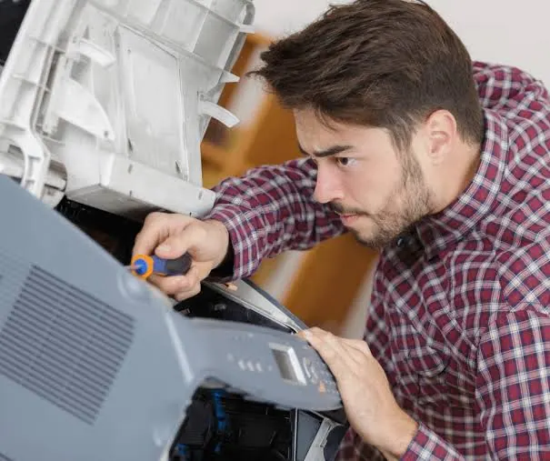
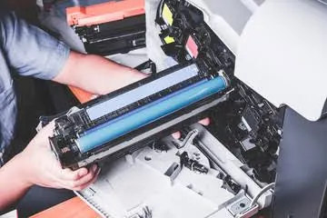

Printers
7 Simple Ways to Maintain Your Printer
Keep your printer reliable with seven practical maintenance habits covering cleaning, paper, cartridges, software, placement and regular use.
Introduction
Printers can be very easy to forget about. They sit quietly on your desk or office. However, when problems occur such as streaky prints, paper jams and connectivity issues it can cause a huge disruption to your whole day. Performing some basic maintenance can help prevent problems and keep your printer running smoothly. The exact maintenance will depend on what type of printer you have (ink jet, ink tank or laser). Always refer to the manufacturers guide for your printer model. Here are 7 key tips to keep your home or office printers running smoothly.

1. Clean the outside
Over time dust, paper fibres and debris can build up on your printer. Turn the printer off and unplug before cleaning. Refer to the safety guidelines provided by the manufacturer. Use a soft lint free cloth and dampen slightly. Do not spray any liquid directly onto your printer. Avoid using harsh chemicals, abrasive cloths and too much pressure on buttons, screens and labels. If you are able to clean certain rollers or areas of your printer refer to the manufacturers guidelines. Try not to get too deep into your printer or touch any hot parts on your laser printer. Try to keep your printer away from too much dust, moisture, heat and cooking areas. This will help to stop debris entering the printer.
2. Use the right paper
The quality of your paper will directly affect how well your printer feeds and your results. Use the correct paper size, weight and type. Using damp, curled, torn or very crumpled paper can cause paper jams. Store your paper flat in its original packaging and in a dry place. Ensure the edges are neat and only fan the paper if the manufacturers guide says so. Don’t overfill the paper tray. Ensure the paper guides are adjusted to sit just touching the paper without causing it to bend.
If you are printing on photo paper, labels, envelopes or thick paper ensure you have selected the correct paper setting and paper feed. Incorrect settings can cause bad quality prints, smudging and feeding issues. Remove the unused paper if the environment is humid or dusty.
3. Ink & Toner
Ink and toner cartridges are specific to your printer model. Ensure you know the exact model number and consumable code. If you haven’t opened the ink/toner yet store them as per the manufacturers guidelines. Keep them away from extreme heat and direct sunlight. Ink jet printers – Avoid touching the electrical contacts and nozzles. Only remove cartridges if you are changing or maintaining. If the printer is showing low ink warnings refer to the manufacturers guidelines. Ink tank printers will have specific refilling instructions. Ensure you use the right type of ink and don’t overfill. Laser printers – Be careful with your toner. Refer to the manufacturers guidelines. Avoid shaking the toner too much as it is a fine powder. Avoid touching the sensitive drums. If you spill toner refer to the manufacturers guidelines.

5. Update software/drivers
Sometimes printers will seem broken due to driver issues. Always download drivers and firmware from the official manufacturers site. Ensure you know the exact model and operating system. If your printer has stopped printing after updating your computer check it is still the default printer. Check it has the correct driver. If it is a network printer check both devices are on the correct network. Avoid removing old or duplicate printers unless you know what printer you are using. Updating firmware can help with compatibility and resolving known issues. Follow the manufacturers guidelines. Do not turn off your printer.
6. Avoid paper jams
Paper jams are often caused by incorrect paper, overfilled trays, incorrect paper guides and small pieces of paper. Always follow the manufacturer guidelines. Turn the printer off if prompted and gently remove paper. Don’t tug the paper as it can cause it to tear. Only open the covers that are meant to be opened. Don’t force paper through the rollers or touch the hot fuser. If the paper tears, the printer keeps jamming or the rollers are making strange noises then arrange for service. If it keeps jamming in the same area then it could be a sign of worn rollers.
7. Position & Ventilation
Ensure your printer is on a stable surface and has enough space for the trays and covers to open. Ensure there is enough ventilation around the printer. Don’t put it in a tight cabinet unless the manufacturer say it is ok. Avoid direct sunlight, heaters, water and heavy dust areas. If you are using your printer in an office environment think about where you are putting it. Ensure any cables aren’t a problem and you can easily replace paper and maintain. If it is hard to reach then it may be mishandled or the jams not resolved. Ensure you have a suitable power point and don’t have any unsafe extension cords. If it is on a network ensure it has the correct security settings and the software is up to date.
Basic Printer Maintenance Tips
To make it as simple as possible, weekly check the paper. Remove any small bits of paper and wipe down any obvious dust. When replacing any cartridges or toner check the area and follow the manufacturers guidelines. If your print quality is suffering use the nozzle clean, align or calibrate tools. Check for driver updates and any maintenance messages. Businesses who tend to print a lot should keep a log of when you service the printer. Include your printer model, how many pages printed (if possible), what consumables have been changed, any error messages and when it was serviced. This can help identify any ongoing issues. You can plan to service your printer in advance.
Conclusion
You don’t need to over complicate printer maintenance. Keeping it clean, using the right paper, being careful with your consumables, following the manufacturers guidelines for your model, keeping your software up to date and clearing jams safely will help to keep your printer running smoothly. If your printer is constantly jamming, printing badly or showing errors don’t force it to work. Get a professional to check it out to see if any parts are worn. Printerworld can help support customers with choosing the right printer, consumables and servicing. Find out what services are available for your model.
Need a hand with your printer or laptop?
Printerworld sells printers, laptops and genuine supplies, and repairs and services both. Bring in your model number and we will help you get it right.